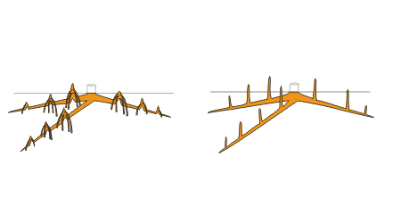

Pneumatophore.
Erect root that rises up above the soil or water and promotes gas exchange. Pneumatophores, or breathing roots, are formed by certain swamp-dwelling trees, such as mangroves, since there is little oxygen available to the roots in waterlogged conditions. They have numerous pores or lenticels over their surface, allowing gas exchange